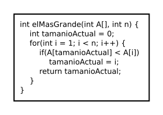
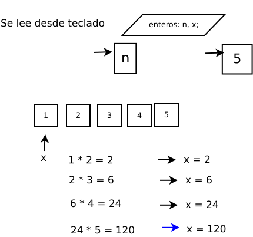
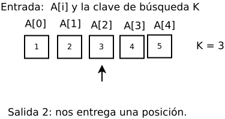
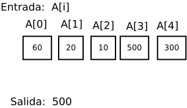
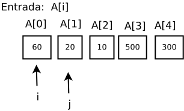

Ejemplos de algoritmos:
El algoritmo para resolver el problema de encontrar el valor más grande en un arreglo de n enteros. El algoritmo mostrado en cada entero, guarda la posición del valor más grande. Este algoritmo se llama búsqueda secuencial del valor más grande que se resuelve por la siguiente función:
Pizarrón, archivo dia: AlgoritmosED/AlgFuncion1.dia

Ejemplo
El concepto matemático de un entero, con operaciones que manipulan los enteros. El tipo de variable int en C++ es una representación física del entero abstracto. La variable tipo int, con las operaciones que actuan sobre la variable tipo int, forman un ADT. Desafortunadamente, la implementación int no es completamente verdadera para el entero abstracto, como hay limitaciones en el rango de valores de la variable int que puede almacenar. Si esta limitación provee algo inaceptable, entonces alguna otra representación para el entero ADT debe ser revisada, y una nueva implementación debe ser usada para las operaciones asociadas.:
Ejemplo
El siguiente pseudocódigo:
leer n x := 1 for i := 2 to n do x := x * i escribir x
Pizarrón, archivo dia: AlgoritmosED/AlgFuncion3.dia

Ejemplo
El siguiente pseudocódigo:
//Entrada: Un arreglo A[0...n - 1] y una clave de búsqueda i ⟵ 0 while i < n and A[i] <> K do i ⟵ i + 1 if i < n return i else return -1
Pizarrón, archivo dia: AlgoritmosED/AlgFuncion4.dia

Ejemplo
El siguiente pseudocódigo:
//Entrada: Un arreglo A[0...n - 1] de números reales
maxVal ⟵ A[0]
for i ⟵ 1 to n - 1 do
if A[i] > maxVal
maxVal ⟵ A[i]
return maxVal
Pizarrón, archivo dia: AlgoritmosED/AlgFuncion5.dia

Ejemplo
El siguiente pseudocódigo:
//Entrada: Un arreglo A[0...n - 1]
for i ⟵ 0 to n - 2 do
for j ⟵ i + 1 to n - 1 do
if A[i] = A[j] return false
return true
Pizarrón, archivo dia: AlgoritmosED/AlgFuncion6.dia
